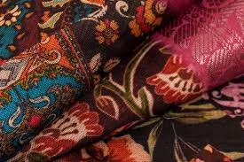
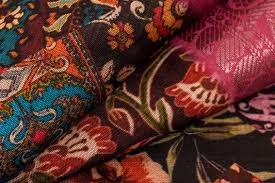

Elevating Every Print With Precision And Passion.
Rasi Screen Printing, where tradition meets innovation, delivering
exquisite designs with every stroke.
India's No.1 Screen Printing Company
Rasi Screen Printing
Timeless Artistry
Modern Sophistication
At Rasi Printing, we intertwine the rich heritage of traditional
craftmanship with contemporary flair to bring you a unique fusion of art
and fashion.With a passion for preserving cultural aesthetics,we
meticulously handcraft each piece, celebrating the intricate beauty of
screen printing.Join us on a journey where tradition meets innovation
and let Rasi Screen Printing adorn your world
Premium Quality
Warranty Protection
Timely Shipping
Sustainable Artistry
Rasi's Array of Screen Printing Techniques
Dive into the world of possibilities with Rosi's diverse range of screen printing
techniques.From traditional methods to cutting-edge innovations.
Traditional Textile
Screen Printing
This method is extensively employed in the fashion
and apparel industry for printing designs onto
garments,fabrics, and accessories.
Advanced UV
Screen Printing
UV screen printing has gained popularity due to its
ability to cure instantily when exposed to ultraviolet
light,resulting in fast production

Fou-Color
Process Printing
Also known as CMYK printing,this method is widely
used for reproducing full-color images with a broad
range of tones and gradients
Client Praise for Rasi Screen Printing
Discover why clients are singing praises for Rasi Screen Printing.From impeccable attention to detail
to timely delivery, our dedication to excellence ensures that every project exceds expectations.
High Quality printing and On-Time!!
we are incredibly impressed with the exceptional service and quality provided by
Rasi Screen printing.Their attention to detail,commitment to delivering on time,and the level of professionalism displayed throughout our collaboration have been
outstanding.Rasi's expertise in screen printing has consistently exceeded our
expectations, ensuring that our branding and promotional materials are of the
highest standard.We are grateful for their partnership and highly recommend Rasi Screen Printing to
anyone in need of top-notch printing services. -Mr Manjunath Gowda/CFO


Showcasing Our Best and proudest Works
Explore the captivating world of Rasi's screen printing mastery,exceptional
creations imbued with precisions,innovation,and enduring sophistication.
 

Reach Out to Rasi Screen Printing Today!
Have questions or ready to start yuor next printing projects?Don't hesitate to contact us!Our
friendly team at Rasi Screen Printing is here to assist you every step of the way.
WE ARE THE BEST
Rasi is a premier destination for those?
seeking unparalleled excellence in success
pricing screen
printing services.with a rich legacy of
craftmanship and innovation,we pride
ourselves on delivering superior quality
prints that captivate and inspire.From our
state of the art facilities.
Copyright 2024,All Rights Reserved by Galvin Design Studio